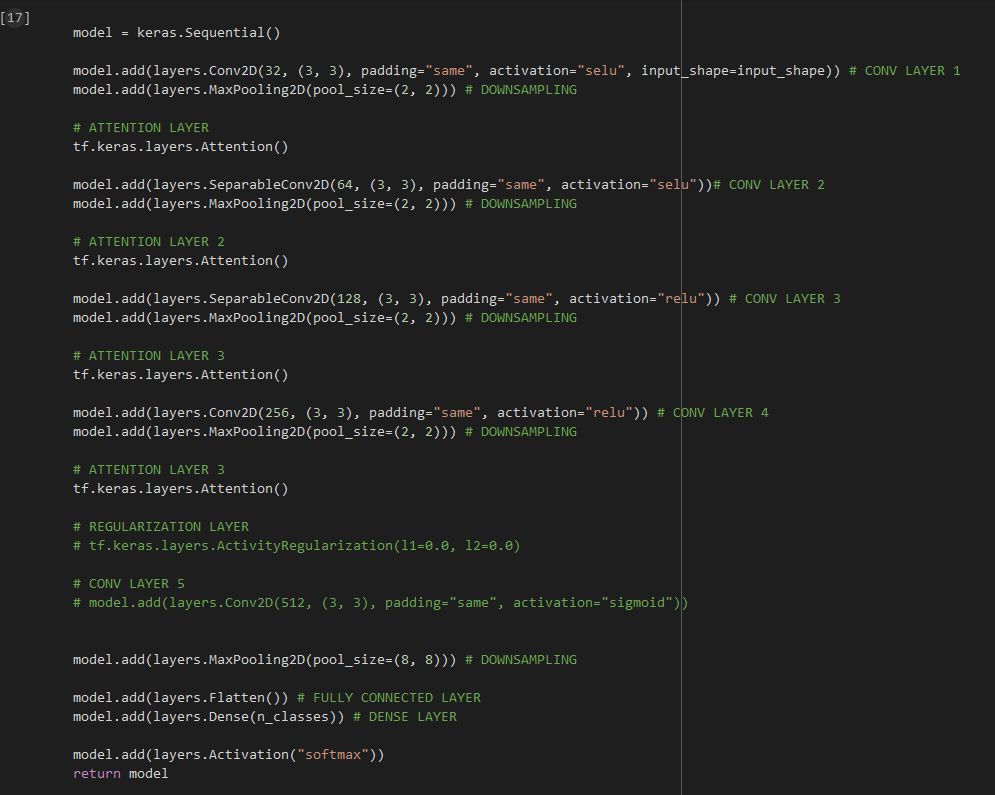
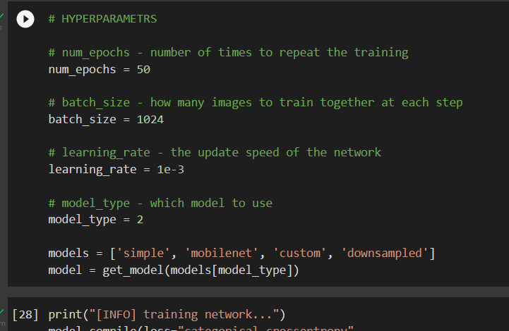

Skin Cancer Classification
Gavin Gammoh, Brian Guo, Michael Jenkins, Abby Alem
Skin cancer is the out-of-control growth of abnormal cells in the epidermis, the outermost skin layer, caused by unrepaired DNA damage that triggers mutations. These mutations lead the skin cells to multiply rapidly and form malignant tumors. The two main causes of skin cancer are the sun’s harmful ultraviolet (UV) rays and the use of UV tanning beds.
The world’s most common cancer is a relentless disease that strikes one in five people by age 70. It is not uncommon for even those younger than 30 to be diagnosed with skin cancer. The good news is that 99 percent of all cases are curable if they are diagnosed and treated early enough. But in order to stop skin cancer, we have to spot it on time. That's where we come in.
Unlike other cancers that form on the inside of the body and require things like MRIs to detect, skin cancer forms on the outside and is usually visible. Learning what to look for on your own skin gives you the power to detect cancer early when it’s easiest to cure, before it can become dangerous, disfiguring or deadly.
Our team has developed a machine learning model through the use of Convolutional Netural Netoworks (CNNs) that does exactly this. Skin cancer cannot be completly diagnosed by just looking at it rather, a skin biopsy is needed. This is where a dermatologist will remove all or part of a suspicious spot and then examine it under a microscope to look for cancer cells.
The goal is to give regular people who may not be very informed about skin cancer the ability to identify these suspicous spots early, with some idea of what they might be, through one simple image. Early detection is key to saving lives and AI has the power to help in this process
The Model we trained can be used here. It has a roughly 75% accuracy so it is not meant to actually be used in the real world rather, it is meant to show off different applications of AI and how it could be used to help lives.
Status
Model Output
*Trained using tensorflow keras. Simple model with some custom changes to improve performance.
 Model Structure
Rising Senior at Lebanon High School. Founder of CS/IT Club at Lebanon High School and NHS Vice President. Involved in Lebanon Show Choir - Dance Captain, UC Early IT Program, and multiple youth Christian associations. High achieving student planning on pursing graduate studies in AI and Machine Learning for the applications of medical robotics and treatment.
Rising Junior at Round Lake Senior High School. Marching Panthers Drum Major, National Honors Society, Tri-M Music Honors Society, National Society of High School Scholars, Robotics Club, Jazz Band I & II Member, and Schuler Scholar. Experience in Python, JavaScript, HTML5, and VexCode. Strong academical prospect planning to major/minor in Computer Science, Economics, Business Management/Administration, and Entrepreneurship.
Rising Senior at Freedom High School & the Academies of Engineering & Technology. Founding President of NSBE Jr at Freedom High School, Bass Drum Captain, NHS MHS & CSHS member, and Tutor. Self-taught programmer proficient with C#, Python, Java, and more. Prospective student with high academic scores with plans to apply for CMU. Plans to get his master’s in Computer Science.
-bio
The Skin Cancer Foundation. (2022, April 28). Skin Cancer Information. Retrieved July 21, 2022, from
https://www.skincancer.org/skin-cancer-information/American Academy of Dermatology. (n.d.). How can I tell if I have skin cancer? Retrieved July 21, 2022, from
https://www.aad.org/public/diseases/skin-cancer/find/know-howAmerican Cancer Society. (2022, January 12). Key Statistics for Melanoma Skin Cancer. Retrieved July 21, 2022, from
https://www.cancer.org/cancer/melanoma-skin-cancer/about/key-statistics.html#:~:text=The%20average%20age%20of%20people,adults%20(especially%20young%20women)